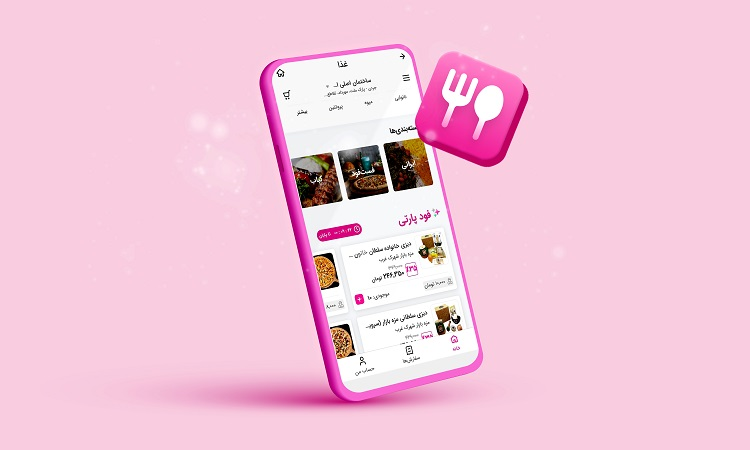

شروع سفارش و انتخاب غذا
پایین صفحه اصلی سوپراپ، گزینه غذا را بزنید. سپس برای مشاهده رستورانهای اطراف، آدرستان
را وارد کنید. حالا غذای موردنظرتان را بالای صفحه بنویسید یا گزینه رستوران را بزنید. راه
آسانتر این است که در بخش دستهبندیها، نوع غذا را مشخص کنید. از فودپارتی، جایزه خرید یا
تخفیفها هم غافل نشوید.
